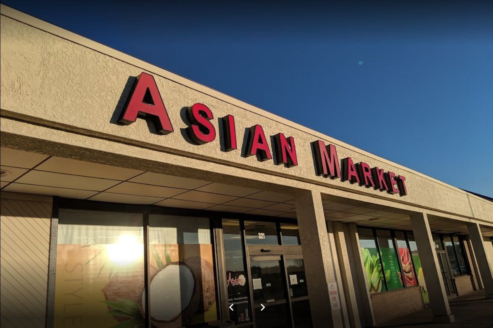
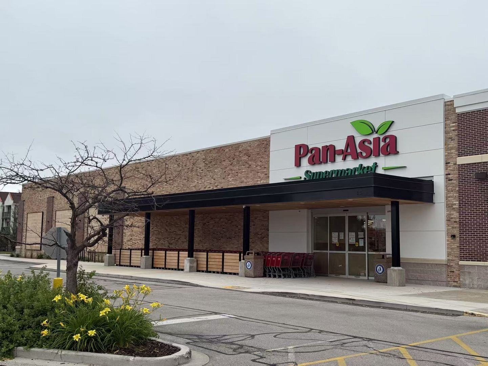
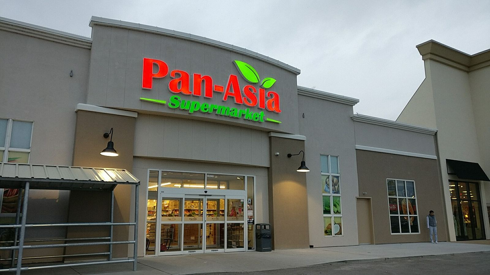

Pan-Asia Supermarket is the largest Asian grocery chain in your town — a full-line supermarket built around fresh seafood, meat, produce, and 20,000+ specialty products from across Asia and the Middle East.
Pan-Asia Supermarket started as Asian Market — a single storefront on North 76th Street in Omaha, Nebraska in 2010. Built on a simple idea — one-stop shopping for all Asian food — the store grew a loyal following for its fresh live seafood, daily-cut meat, and pantry staples imported directly from the communities it serves.
That same idea has since opened doors across six states: Kansas, Missouri, Oklahoma, Wisconsin and Tennessee, with Texas and Michigan next. Every new location keeps the same standard — 20,000+ products, fresh departments, and a warm welcome for every customer, open 365 days a year.
See every store on the map
Asian Market opens on N. 76th St. — the first Pan-Asia storefront.
Our Kansas flagship opens, bringing sushi, bakery, café and boba tea to the lineup.
Serving Greater St. Louis, with China Bistro, Cube Tea Studio, Hkahku Sushi, The Face Shop and a halal butcher shop.
Pan-Asia Supermarket of Tulsa opens with Jade Grill hot food and in-house boba tea.
Oriental Supermarket joins the family, serving a second Overland Park neighborhood.
A modern, full-line store with sushi, bakery, café and boba tea.
Our newest open store, serving the Nashville metro area.
Two more stores on the way — join our team early via the Careers page.


Every Pan-Asia store carries goods imported and sourced from Chinese, Vietnamese, Korean, Japanese, Thai, Filipino, Indian, Pakistani, Indonesian, Malaysian, Burmese, Laotian, Singaporean, Hmong and Cambodian traditions.
We accept all major credit cards and Food Stamp / EBT cards at every location.
Every store is open every day of the year, with earlier closures on major holidays only.
We partner with local and national vendors — reach out if you'd like to work together.